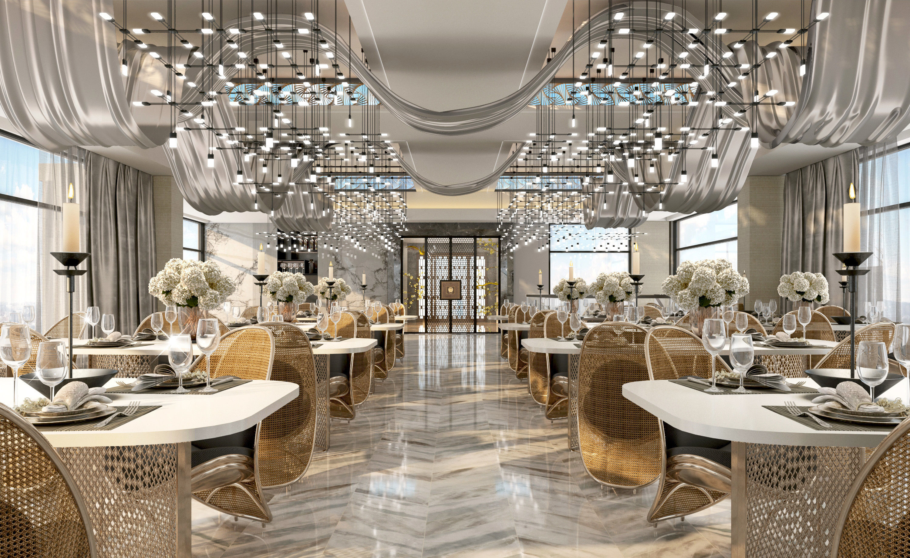
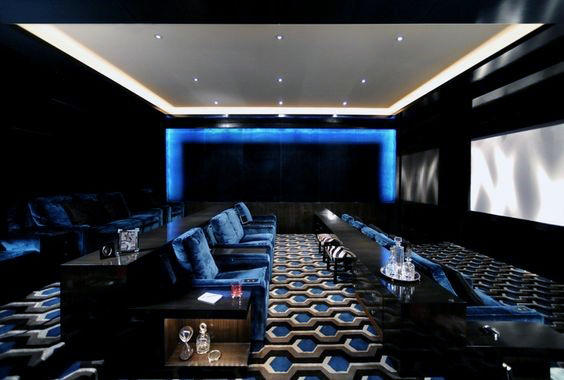
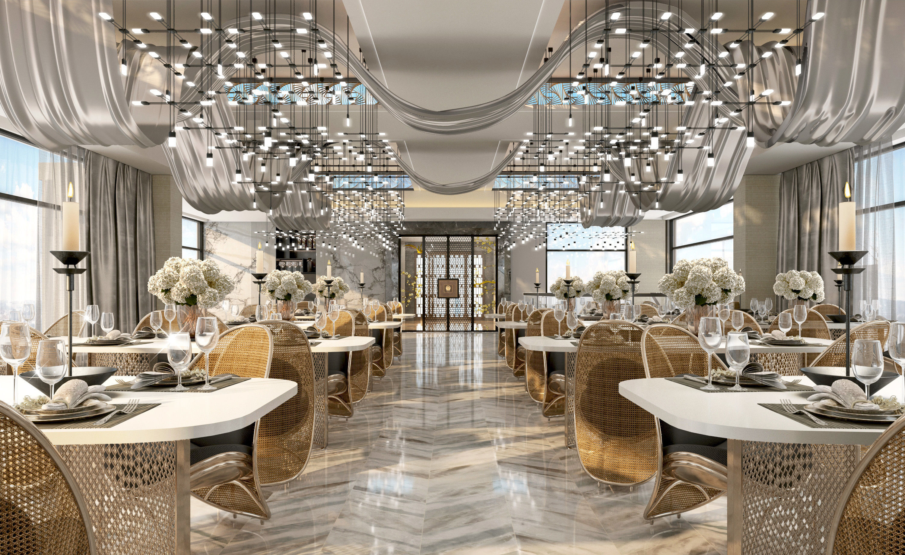
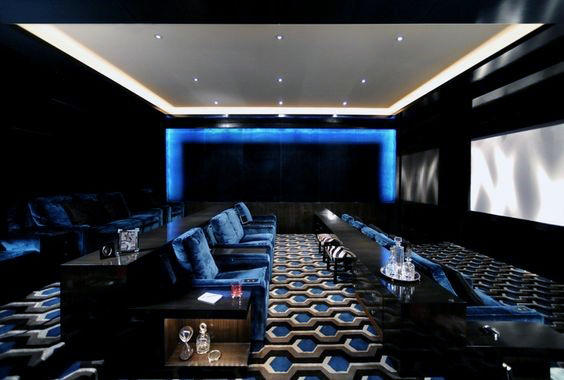
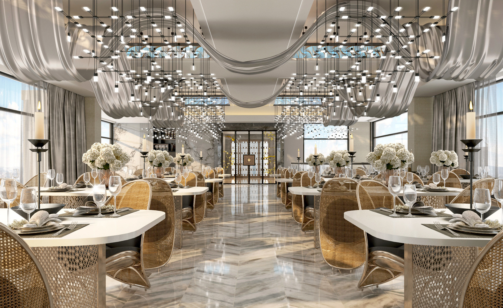
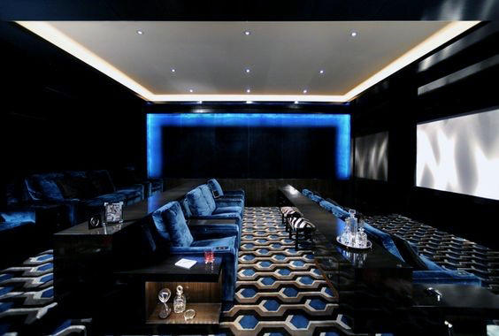

At Michelle Studios, our main focus is to offer all of our clients the ultimate luxurious experience. The theatre is equipt with suede seats, ambience lighting, and the newest 70 feet, 8k technology flat screen. Because we value our clients, giving you the service you deserve is our top priority. Our aim is to make you feel at home, from the moment you walk through our doors.
Michelle Studios was inspired by the once upon a time "Hollywood Boulevard Cinemas" which was built back in the 1960's in Los Angeles, California. The modern re-design of the theatre was designed by "L Makiage" and the actual bulding was constucted by one of the contrusction moguls, "Lorak Jade Contrusctions."


Although animals are not permitted in the theatre, an exception is made for service animals. Please inform a cast member if any accommodations are required at time of ticket purchase. Guests who use service animals must retain control of their animals at all times and should keep them on a leash or harness while visiting.
Restrooms are located on the lower and balcony levels of the theatre. Twelve accessible restrooms are located on the main floor.
A limited number of Listening Devices (which amplify the sound of the movie), Closed Captioning Devices and Descriptive Narrative Devices are available at no cost at the theatre and require a driver's license or credit card as security. Guests requiring this service should see the theatre manager 30 minutes prior to show time.
Our roof top restuarant towers over the city and shows the beautiful skyline and night-lights. resturant is open 24/7, offering you 5-star cuisine at any time of the day. All reservations should be made a week prior. The dress code is smart-casual and we do not allow flip-flops, low rise pants, torn pants, overly ripped clothes, bandanas, beanies, and baseball caps.